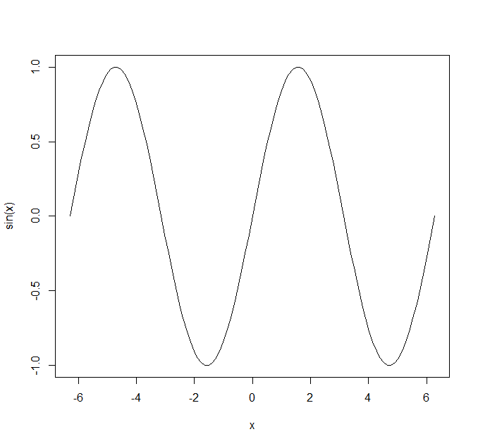
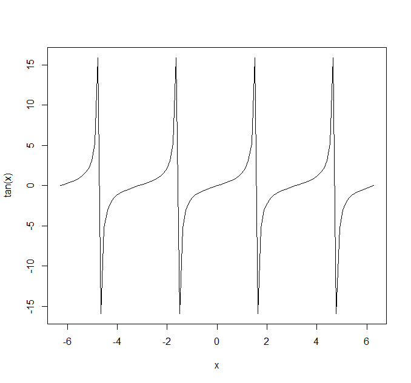
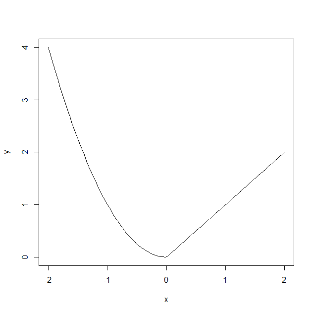
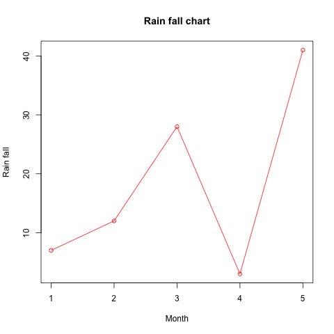

R プロット - 関数曲線図
関数曲線図は関数を研究するための重要なツールです。R の curve() 関数は関数のグラフを描画できます。コード形式は次のとおりです：
curve(expr, from = NULL, to = NULL, n = 101, add = FALSE,
type = "l", xname = "x", xlab = xname, ylab = NULL,
log = NULL, xlim = NULL, …)
# S3 函数的方法
plot(x, y = 0, to = 1, from = y, xlim = NULL, ylab = NULL, …)
注：R 言語のクラスには S3 クラスと S4 クラスがあります。S3 クラスは広く使用されており、作成は簡単で粗いですが柔軟です。一方、S4 クラスはより精密です。
パラメータ：
- expr：関数式
- from と to：プロットの開始範囲と終了範囲
- n：整数値で、x の値の数を表します
- add：論理値です。TRUE の場合、プロットを既存のプロットに追加することを示します。
- type：プロットのタイプです。p は点、l は直線、o は点と線を同時に描画し、線は点を通過します。
- xname：x 軸の変数に使用する名前。
- xlim と ylim は x 軸と y 軸の範囲を表します。
- xlab、ylab：x 軸と y 軸のラベル名。
plot 関数では、x と y はそれぞれプロットされる図形の横座標と縦座標を表します。
以下で sin(x) 関数のグラフを描画します：
curve(sin(x), -2 * pi, 2 * pi)

注意：あらゆるコンピュータのプロットツールが描画するものは模式図であり、実際の関数グラフと完全に同じであることは保証されません。一定の間隔ごとに点を取り、その点の「高さ」を計算して描画するだけです。曲線の連続性を保証するために、隣接する2点間は直線で接続されます。そのため、特定の状況では、例えばtan(x)エラーが発生する可能性があります：

すべての (2n+1)Pi / 2 の位置で不連続点が現れますが、R のグラフはそれらを接続しています。この点を理解していただければと思います。
もちろん、すべての関数が sin のようにベクトル処理をサポートしているわけではありません。手動で数値シーケンスを生成し、plot 関数を使用して関数グラフを生成することもできます。関数 f が単一の数値のみをパラメータとしてサポートすると仮定します：
例
# 関数 f を定義
f = function (x) {
if (x >= 0) {
x
} else {
x ^ 2
}
}
# 独立変数のシーケンスを生成
x = seq(-2, 2, length=100)
# 従属変数のシーケンスを生成
y = rep(0, length(x))
j = 1
for (i in x) {
y[j] = f(i)
j = j + 1
}
# グラフを描画
plot(x, y, type='l')
f = function (x) {
if (x >= 0) {
x
} else {
x ^ 2
}
}
# 独立変数のシーケンスを生成
x = seq(-2, 2, length=100)
# 従属変数のシーケンスを生成
y = rep(0, length(x))
j = 1
for (i in x) {
y[j] = f(i)
j = j + 1
}
# グラフを描画
plot(x, y, type='l')

次に、plot() 関数を使用してベクトルデータをプロットします：
例
# ベクトルデータ
v <- c(7,12,28,3,41)
# 画像を生成
png(file = "line_chart_label_colored.jpg")
# プロット、線グラフの色は赤、main パラメータはタイトルの設定に使用
plot(v,type = "o", col = "red", xlab = "Month", ylab = "Rain fall",
main = "Rain fall chart")
v <- c(7,12,28,3,41)
# 画像を生成
png(file = "line_chart_label_colored.jpg")
# プロット、線グラフの色は赤、main パラメータはタイトルの設定に使用
plot(v,type = "o", col = "red", xlab = "Month", ylab = "Rain fall",
main = "Rain fall chart")

その他の拡張